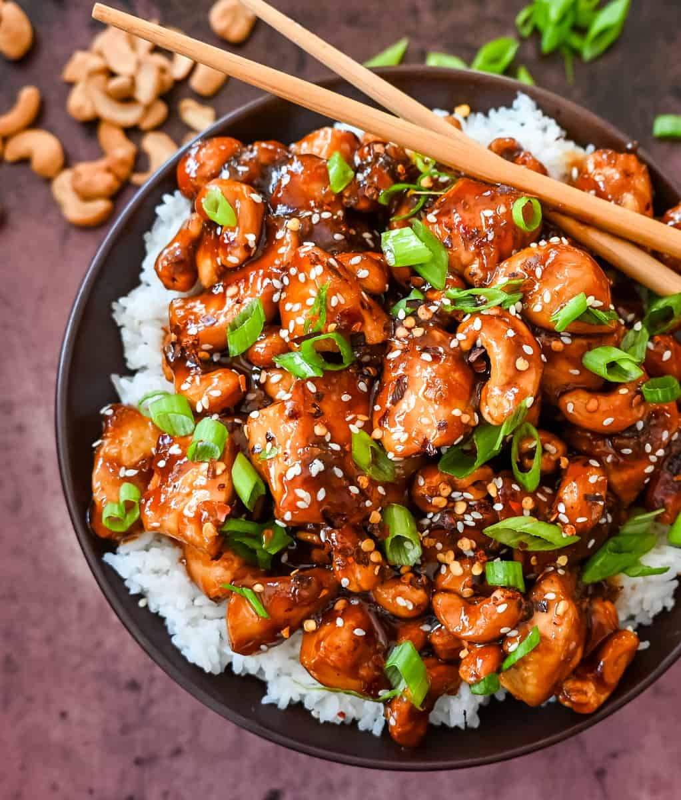

Cashew Chicken

Description
This quick and easy cashew chicken is made with chicken, crunchy cashews, in a velvety homemade stir fry sauce.
Ingredients
- 1 1/2 lbs. Chicken Breast (cut into bite-size pieces)
- 1 Tablespoons Soy Sauce
- 2 teaspoons Cornstarch
- 2 Tablespoons Oil
Sauce:
- 3 Tablespoons Soy Sauce
- 3 Tablespoons Hoisin Sauce
- 2 teaspoons Chili Garlic Sauce
- 1/2 cup Chicken Stock
- 1 Tablespoon Sugar (or Honey)
- 1/2 teaspoon Ginger
- 3/4 cup Salted Cashews
Garnish:
- Green Onions
- Sesame Seeds, Red Chili Flakes (optional)
- Jasmine Rice
Steps
- Start by cutting the chicken into bite-size pieces. Place in a ziploc bag. In a small bowl, whisk together soy sauce and cornstarch until the cornstarch is dissolved. Toss the mixture with the chicken and set aside for 10 minutes.ame seeds, and red chili flakes.
- Heat a large skillet over medium-high heat. Add oil. Add the chicken and cook until cooked through, about 7-8 minutes.
- While chicken is cooking, make the sauce. In a bowl, whisk together remaining soy sauce, hoisin sauce, chili garlic sauce, sugar, chicken stock, ginger, and cornstarch.
- Add the sauce to the chicken and reduce heat to medium-low. Continue to cook and stir often to coat the chicken with the sauce. As the sauce thickens, it will coat the chicken even more. Fold in cashews.
- When ready to serve, place rice in a bowl and top with cashew chicken. Sprinkle with green onions, sesame seeds, and red chili flakes.